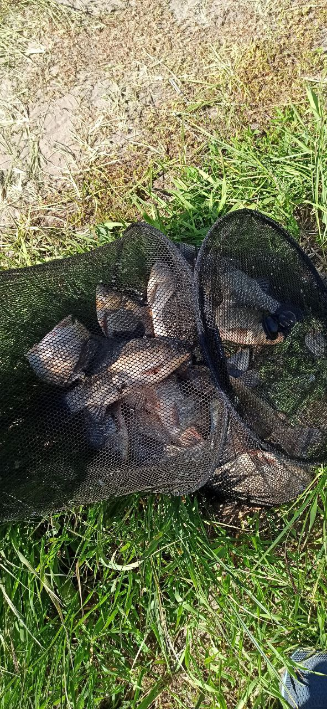
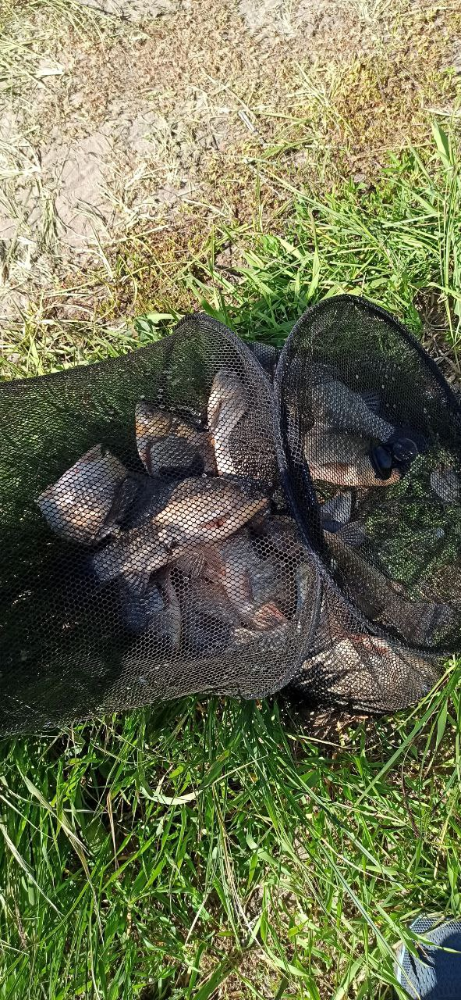

Меня зовут Олег, мне 28 лет. Проживаю в Белгородской области город Шебекино. Закончил БГТУ им.В.Г.Шухова по направлению "Техносферная Безопасность" в степени Магистра. Сейчас работаю по специальности. Сам по себе весёлый, люблю шутить, отзывчивый, вгеда готов помочь. В свободное время люблю узнавать что-то новое, проводить время с девушкой и друзьями, играть в настольные игры, курить кальян, смотреть сериалы и фильмы.
 

Люблю рыбалку. Конечно я не профессионал, для меня это больше для расслабления и отвлечения. Когда находишься на природе у воды - всё это хорошо успокаивает.

Очень люблю читать. Особенно нравится читать фантастику, тёмное фентези, Warhammer 40k. Один из любимых авторов Сэнди Митчвелл. Сейчас продолжаю читать книгу этого-же автора "За Императора", но времени читать к сожалению нет.
Дома у родителей есть 2 кота и 1 кошка. На первом фото кошка Лёля, она уже старенькая, поэтому ей всё простительно. На втором фото кот Флуф, он плакса, ему никогда ничего не нравится. И на третьем фото кот Борис, боевой котяра, бьет всех чужих котов и ловит всё что бегает, летает и ползает.
Хочу закончить Elbrus Bootcamp, стать разработчиком и сменить сверу деятельности. Хочу немного попутешествовать чтобы посмотреть другие города или страны. Ещё хочу одно из хобби заняться либо сельским хозяйством, садоводством либо пчеловодством.